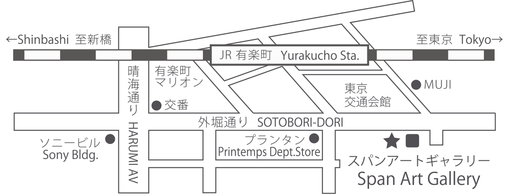

SPAN ART GALLERY／スパンアートギャラリー
〒104-0061 東京都中央区銀座2-2-18西欧ビル1Ｆ
google map
TEL/03-5524-3060 FAX/03-5524-3103
[e-mail] info@span-art.co.jp
[URL] http://www.span-art.co.jp/
> JR「有楽町駅」銀座出口 徒歩3分
> 地下鉄有楽町線「銀座一丁目」4番出口 徒歩0分
石橋秀美の解剖図展
at
span art gallery
2014.11.10 MON ~ 11.15 SAT
open 11:00 ~ close 19:00
( at 11.15 SAT - open 11:00 ~ close 17:00 )
SPAN ART GALLERY／スパンアートギャラリー
〒104-0061 東京都中央区銀座2-2-18西欧ビル1Ｆ
google map
TEL/03-5524-3060 FAX/03-5524-3103
[e-mail] info@span-art.co.jp
[URL] http://www.span-art.co.jp/
> JR「有楽町駅」銀座出口 徒歩3分
> 地下鉄有楽町線「銀座一丁目」4番出口 徒歩0分